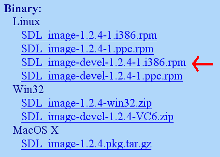

在本节课中，你将学会安装SDL_image扩展库。如果你掌握了安装这一个扩展库的方法，那么你将能够安装所有的扩展库。
以下是在不同情况下，安装SDL_image的方法：
1)现在，打开你的SDL工程并进入项目属性。

2)在库中，在

如果你想连接SDL_ttf，那么你就加上：
7)要使用SDL_image，确保先包含它的头文件：
以下是在不同情况下，安装SDL_image的方法：
| 使用Ubuntu的用户 |
你又要使用包管理器了。打开后搜索libsdl-image1.2-dev，这是SDL_image的开发包。如果找到了，单击它开始安装。如果你要安装SDL_ttf，你得搜索 libsdl-ttf2.0-dev如果你要安装SDL_mixer，你得搜索 libsdl-mixer1.2-dev等等。 |
| 使用基于RPM发行版的用户 |
您需要SDL_image RPM开发包， 你可以从此处下载。 
向下滚动到Binary部分，下载Linux开发包。 接下来启动RPM，使用它完成安装。 |
| 使用apt-get或者yum commands的用户 |
您在第1课中已经安装好了SDL_image, SDL_ttf以及SDL_mixer。 |
1)现在，打开你的SDL工程并进入项目属性。
2)在库中，在
SDL的后面附加上如下代码：SDL_image
如果你想连接SDL_ttf，那么你就加上：
SDL_ttf
SDL_mixer
7)要使用SDL_image，确保先包含它的头文件：
#include "SDL/SDL_image.h"
如果你在安装SDL_ttf，你就这样写：
现在扩展库就安装好了。
#include "SDL/SDL_ttf.h"
#include "SDL/SDL_mixer.h"
现在扩展库就安装好了。
现在你可以使用SDL_image的函数了。
其中，你最想了解的应该是
其中，你最想了解的应该是
IMG_Load()函数。
SDL_Surface *load_image( std::string filename )
{
//加载的图像
SDL_Surface* loadedImage = NULL;
//优化后的图像
SDL_Surface* optimizedImage = NULL;
//使用SDL_image加载图像
loadedImage = IMG_Load( filename.c_str() );
//如果图像加载成功
if( loadedImage != NULL )
{
//创建一个优化后的图像
optimizedImage = SDL_DisplayFormat( loadedImage );
//释放原先加载的图像
SDL_FreeSurface( loadedImage );
}
//返回优化后的图像
return optimizedImage;
}
这是上一课中的图像加载函数的修改版。你可以看到，
从这节课开始，PNG将会是主要用到的图像格式。PNG有着极佳的无损压缩特性。
IMG_Load()函数与SDL_LoadBMP()函数的功能看上去完全相同，但实际上有一个很大的不同点，就是IMG_Load()可以加载BMP, PNM, XPM, LBM, PCX, GIF, JPEG, TGA 和 PNG 格式的文件。
从这节课开始，PNG将会是主要用到的图像格式。PNG有着极佳的无损压缩特性。